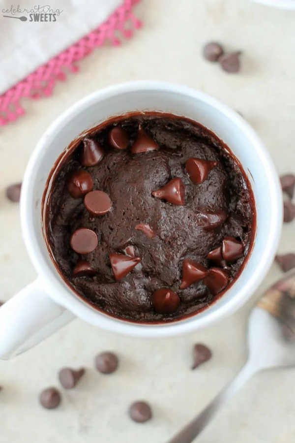

Home
Brownie in a Mug

Description
For when you need a rich, fudgy brownie immediately! It's so easy and can have you spoonful of brownie in a matter of minutes.
Ingredients
- 3 tablespoons granulated sugar
- 3 tablespoons all purpose flour
- 1 1/2 tbsps unsweetened cocoa powder
- 2 tbsps chocolate chips
- 1 1/2 tbsps melted coconut oil
- 3 tbsps milk
- 1/4 tsp vanilla extract
- salt to taste
Steps
- Place sugar, flour, cocoa powder and salt in a mug. Use a small whisk or fork, and stir until combined, and free of lumps.
- Stir in chocolate chips.
- Add oil, milk, and vanilla, stir with a spoon or small rubber spatula until just combined
- Sprinkle a few additional chocolate chips over the top and cook in the microwave for 60 seconds.
- Check to see if it is done (no raw batter, fudgy chocolate chips are ok). If necessary, continue cooking in 10 second increments.
- Eat immediately!